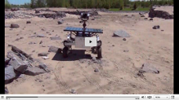
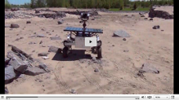

En construction...
Portfolio
Reconstruction tridimensionnelle automatisée d’un environnement fermé2014
La reconstruction tridimensionnelle des environnements intérieurs est un domaine encore
assez récent et comportant beaucoup de lacunes.
En effet, les solutions actuelles coûtent souvent trop cher, ne sont pas efficaces, sont trop lentes et ne fournissent pas nécessairement un résultat de qualité.
L’objectif de ce projet était donc de pallier à ces problèmes en proposant un système robotique facilement utilisable, portable, efficace et à faible coût.
La solution proposée utilisait le robot du club Capra, mais pouvait être portée facilement sur n'importe quel robot terrestre.
Artéfacts:
En effet, les solutions actuelles coûtent souvent trop cher, ne sont pas efficaces, sont trop lentes et ne fournissent pas nécessairement un résultat de qualité.
L’objectif de ce projet était donc de pallier à ces problèmes en proposant un système robotique facilement utilisable, portable, efficace et à faible coût.
La solution proposée utilisait le robot du club Capra, mais pouvait être portée facilement sur n'importe quel robot terrestre.
Artéfacts:
Façade ROS pour un prototype de rover martien2013
L'Agence spatiale Canadienne possède une flotte de prototypes de rovers autant lunaires que martiens.
Afin de simplifier leur utilisation, l'Agence a développé son propre logiciel de contrôle utilisant ROS.
Il est donc nécessaire de développer une interface ROS pour chaque nouveau rover n'étant pas compatible.
C'était le cas pour le MESR (Mars Exploration Science Rover), pour lequel j'ai contribué au développement de la façade ROS, ainsi que du logiciel de contrôle utilisant Rosjava.
Liens utiles:
Afin de simplifier leur utilisation, l'Agence a développé son propre logiciel de contrôle utilisant ROS.
Il est donc nécessaire de développer une interface ROS pour chaque nouveau rover n'étant pas compatible.
C'était le cas pour le MESR (Mars Exploration Science Rover), pour lequel j'ai contribué au développement de la façade ROS, ainsi que du logiciel de contrôle utilisant Rosjava.
Liens utiles:
Vidéo de présentation du MESR


Moniteur de broadcast réseau2014
Dans l'objectif d'analyser les différents types de broadcasts réseau circulant sur le réseau du Collège de Bois-de-Boulogne, une application python permettant d'enregistrer dans une base de données tous les paquets se rendant à une interface réseau connectée à plusieurs VLANs a été développée.
Cette application permet d'obtenir plusieurs informations sur les différents paquets, tels que leur contenu et leurs émetteurs/receveurs.
Une interface web peut aussi être utilisée pour consulter d'obtenir diverses statistiques, tels que les protocols publiant le plus et pouvant ainsi nuire à la qualité du réseau.
Artéfact:
Cette application permet d'obtenir plusieurs informations sur les différents paquets, tels que leur contenu et leurs émetteurs/receveurs.
Une interface web peut aussi être utilisée pour consulter d'obtenir diverses statistiques, tels que les protocols publiant le plus et pouvant ainsi nuire à la qualité du réseau.
Artéfact:

{kind=link}